Diocesan Officials
The Bishop, priests, and leaders entrusted with shepherding our Diocese.
Diocesan Leadership

DIOCESAN OFFICIALS

Vicar General I
Very Rev. Msgr. John C. Iwe
St. Benedict's Parish Amaraku
08134077144, 07038446056

Vicar General II
Very Rev. Fr. Bartholomew Nnaemedo
St. Mary's Pro-Cathedral Parish, Okigwe
09069098866
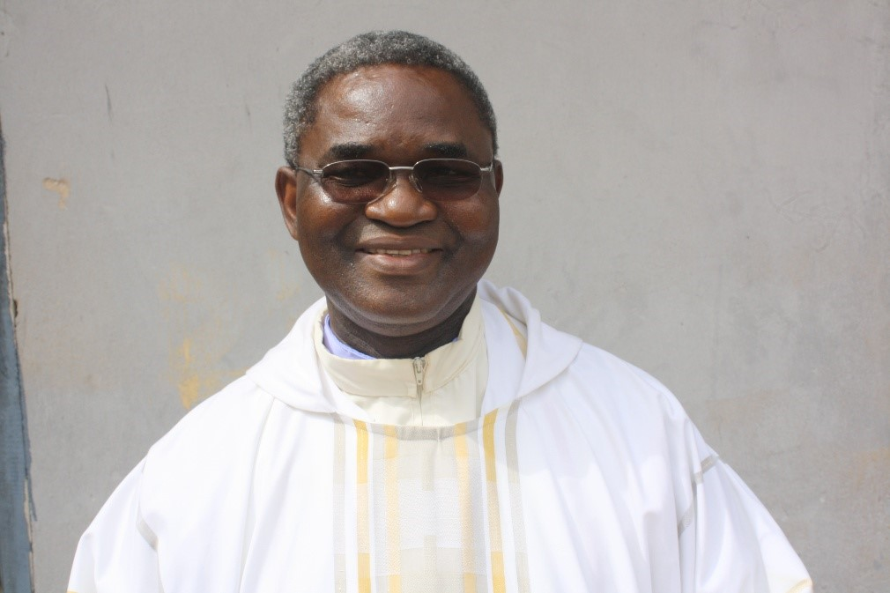
Episcopal Vicar, Okigwe Zone
Very Rev. Fr. Josephat Nwankwo
All Saints Parish, Ogii
08033602181
Episcopal Vicar for Clergy
Very Rev. Msgr. Simon O. Anyanwu
St. Mary's Pro-Cathedral Parish, Okigwe
08063897006

Chancellor/Secretary
Very Rev. Fr. Samuel Obinnaya Okoli
Bishop's House, Villa Lourdes, Okigwe
08133807134
obinnayanoble1@gmail.com
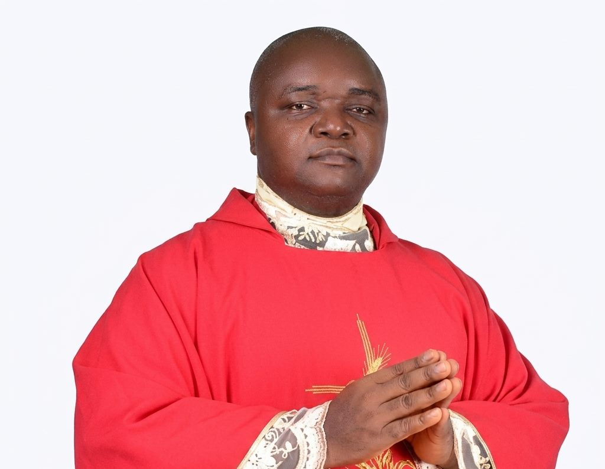
Judicial Vicar
Very Rev. Fr. Michael Agbayi
Christ the King Parish, Umunchi
08038751950, 08069689968
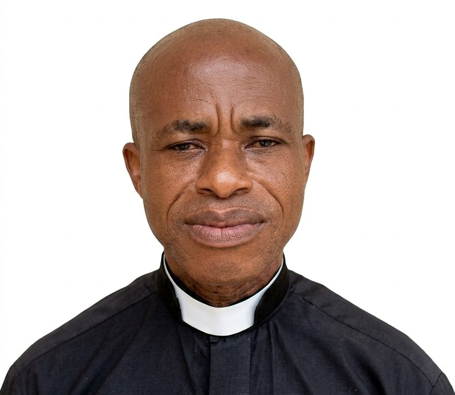
Financial Administrator
Very Rev. Fr. Livinus Iroh
Bishop's House, Villa Lourdes, Okigwe
09047713873
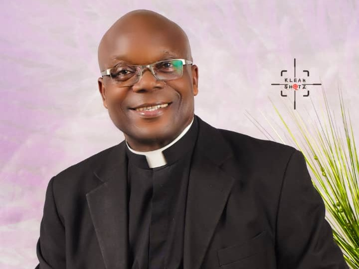
Cathedral Administrator
Very Rev. Fr. Michael Ohanete
St. Mary's Pro-Cathedral Parish, Okigwe
08060077261
Diocesan Legal Adviser
Very Rev. Fr. Oliver Mbagwu
St. Mary's Pro-Cathedral Parish, Okigwe
08037923252
Diocesan Legal Adviser
Very Rev. Fr. Anthony Onyenagada
Christ the King Parish, Ikperejere Uboma
07032427384
Meet the Deans of our Various Deaneries

Dean of Okigwe Deanery
Rev. Fr. Michael Ohanete
Dean of Ehime East Deanery
Msgr. Jeremiah Ofoegbu
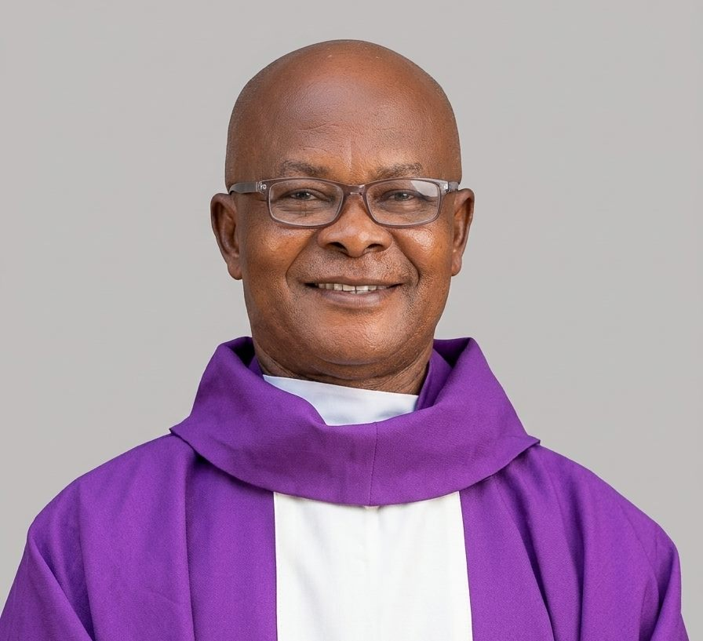
Dean of Ugiri/Mbama Deanery
Rev. Fr. Jacob Okafor
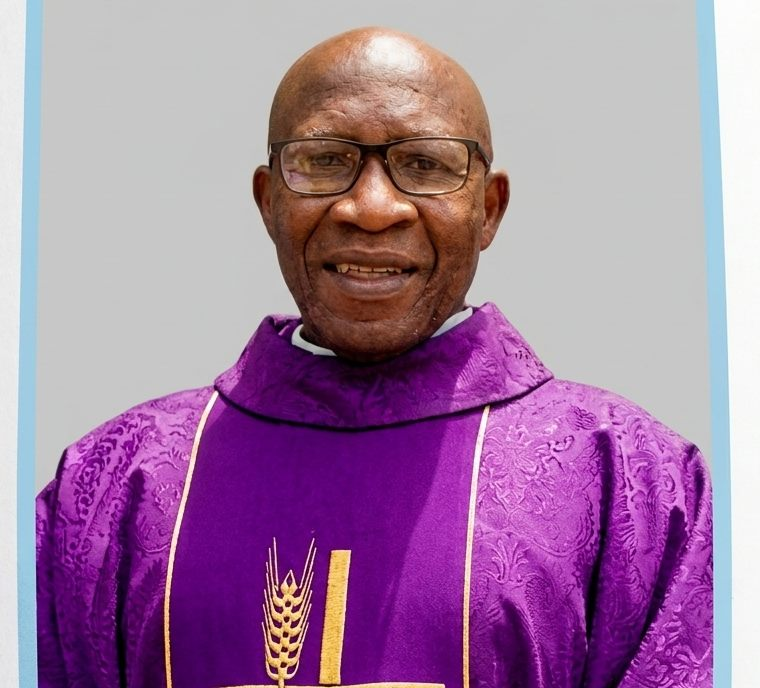
Dean of Osu Deanery
Rev. Fr. Kenneth Ekeugo
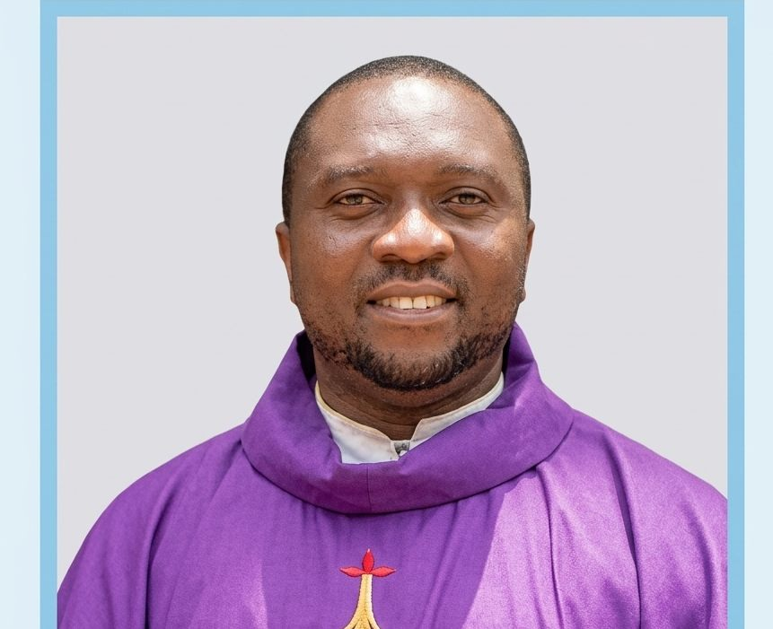
Dean of Obowo East Deanery
Rev. Fr. JudeKingsley Maduka
Dean of Obowo West Deanery
Rev. Fr. Michael Okafor
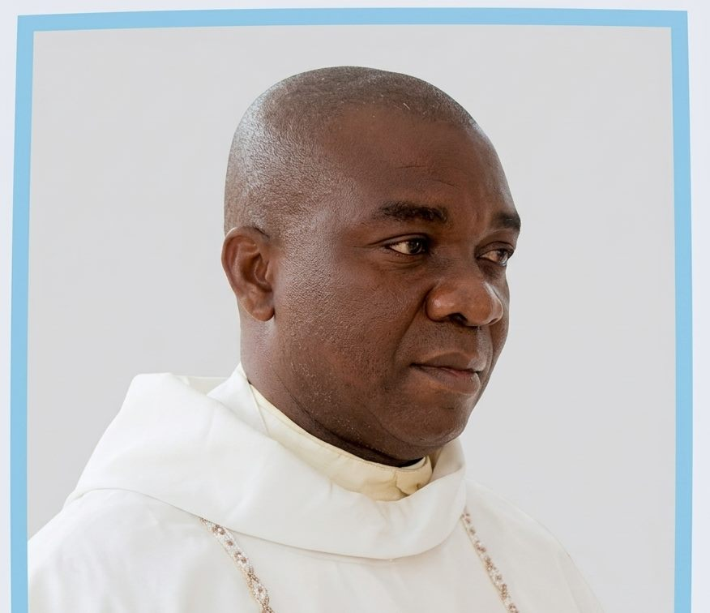
Dean of Uboma Deanery
Rev. Fr. Kelvin Ohalete
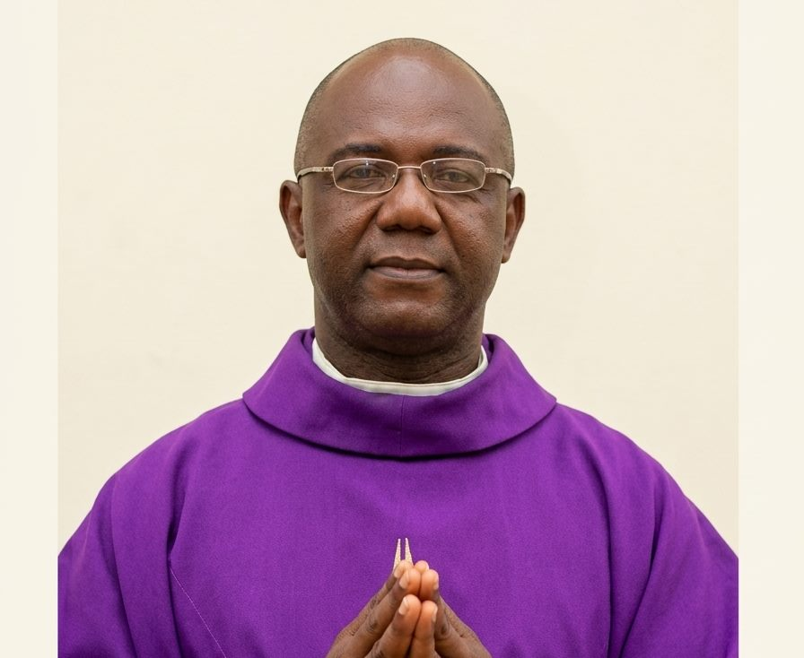
Dean of Uturu Deanery
Rev. Fr. Cyril Agodi
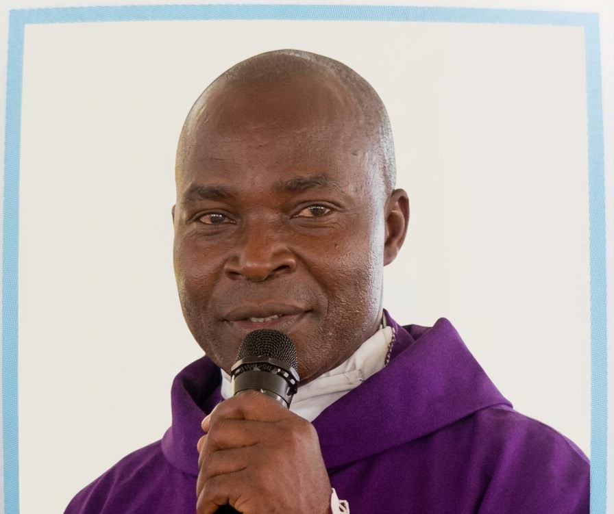
Dean of Onuimo Deanery
Rev. Fr. Michael Nwosu
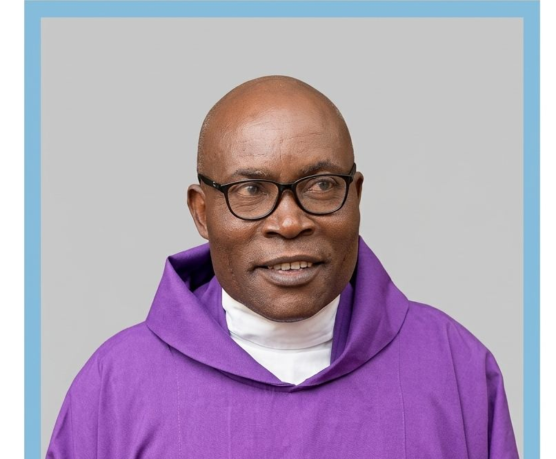
Dean of Umunneochi Deanery
Rev. Fr. Cletus Okoye
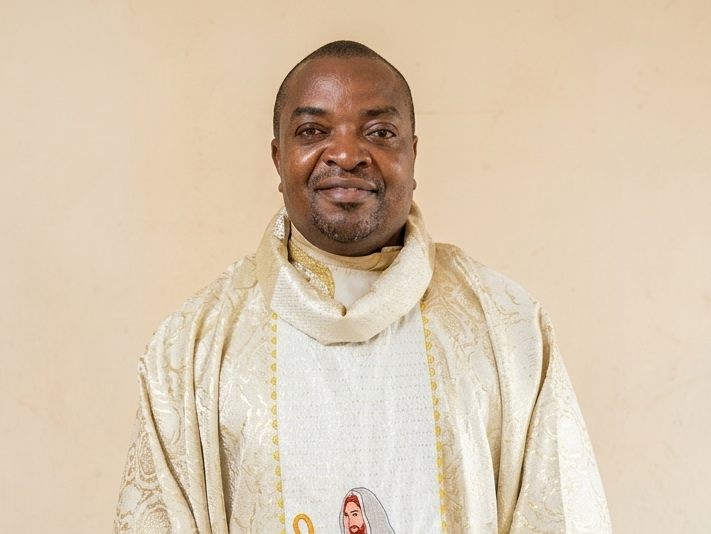
Dean of Isuikwuato Deanery
Rev. Fr. Daniel Odoh
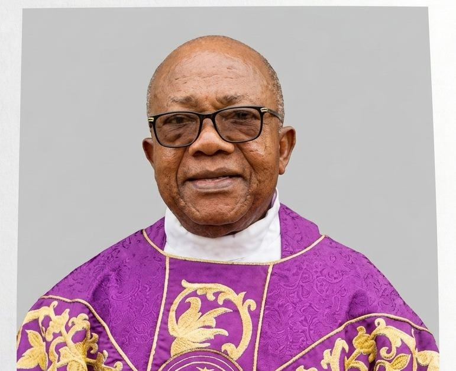
Dean of Ihitte Deanery
Rev. Fr. Fidelis Ekemgba
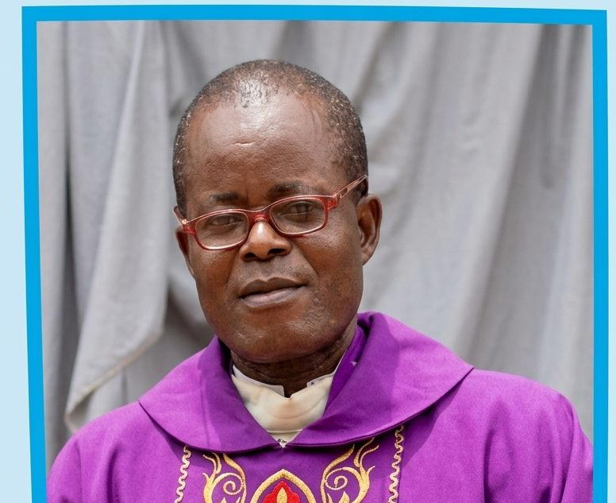
Dean of Ehime West Deanery
Rev. Fr. John Ifebigbo
Find Your Parish Family
Discover a parish community near you and begin or deepen your journey of faith.